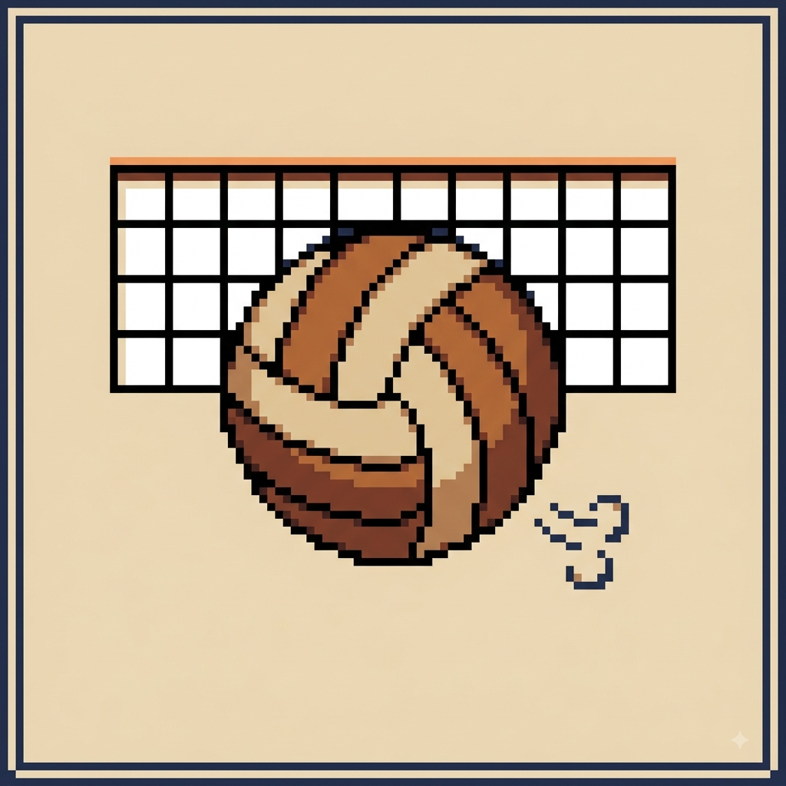

A Origem do Voleibol
Por: Ellen Scremin
O vôlei foi criado em 1895 por William G. Morgan nos EUA. O objetivo inicial era criar um esporte de menor impacto físico que o basquete para adultos.
Fonte: CBV
Compartilhando curiosidades, regras e a paixão pelo voleibol

Por: Ellen Scremin
O vôlei foi criado em 1895 por William G. Morgan nos EUA. O objetivo inicial era criar um esporte de menor impacto físico que o basquete para adultos.
Fonte: CBV

Por: Ellen Scremin
Introduzido nos anos 90, o líbero é especialista em defesa e recepção. Ele usa um uniforme de cor diferente e não pode sacar nem atacar acima da rede.
Fonte: FIVB

Por: Ellen Scremin
O saque "jornada nas estrelas" e o "viagem ao fundo do mar" revolucionaram o jogo. A bola pode ultrapassar os 120 km/h em partidas profissionais!
Fonte: WebVôlei

Por: Ellen Scremin
Apesar de similares, o vôlei de praia é jogado em duplas e a quadra é ligeiramente menor (16x8m) em comparação com a de quadra (18x9m com 6 jogadores).
Fonte: Comitê Olímpico

Por: Ellen Scremin
Os jogadores giram no sentido horário toda vez que recuperam a posse do saque. Entender a rotação é fundamental para a tática da equipe.
Fonte: Regras FIVB

Por: Ellen Scremin
Uma das jogadas defensivas mais impressionantes! Três jogadores saltam sincronizados na rede para parar o ataque adversário mais potente.
Fonte: Revista Vôlei